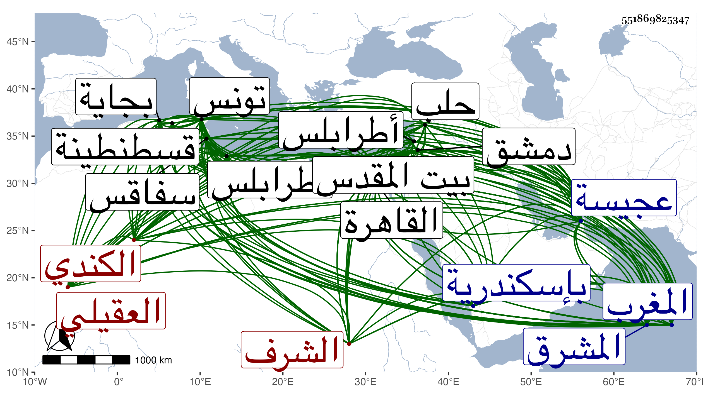

0902Sakhawi.DawLamic.ITO20230111-ara1.EIS1600.551869825347
Biography ID: 551869825347
981
يحيى بن عبد الرحمن بن محمد بن صالح بن علي بن عمر بن عقيل بالفتح بن زرمان بتقديم الزاي المفتوحة بن عجنق بفتح أوله وثالثه وسكون الجيم بينهما بن يحيى بن أبي القسم الشرف الكندي العقيلي بالفتح نسبة لجده العجيسي كأنه نسبة لعجيس بن امرئ القيس بن معبد بن المقداد بن عمر والذي سرد نسبه إليه ولكن قال هو ان مولده بأرض عجيسة البجائي المالكي نزيل القاهرة ووالد البدر محمد الماضي ويعرف بالعجيسي . ولد فيما زعمه في سنة سبع وسبعين وسبعمائة أو قبلها بأرض عجيسة وأنه مكث في بطن أمه أربع سنين ونشأ بها فحفظ القرآن وكتبا وتلا في بلده لنافع من جهة ورش خاصة على ابن عمه على بن موسى ثم ارتحل في الطلب سنة اثنتين وتسعين فكان ممن أخذ عنه الفقه ببجاية ابن عمه المذكور وتلميذه يعقوب بن يوسف وابو مهدي عيسى اليليلتني الزواويين وقاضيها وعالمها أبي العباس النقاوسي شارح المفرجة وأحمد بن يحيى بن صابر وبقسنطينة قاضي الجماعة بها أبو العباس أحمد بن الخطيب بن القنفد وعنه أخذ العربية وببونة التي يقال لها بلد العناب قاضي الجماعة بها أبو العباس أحمد بن القابض وبتونس قاضيها وعالمها أبو مهدي عيسى الغبريني وأبو عبد الله بن عرفة إمام المغرب قاطبة وعنهما أخذ التفسير والحديث وبعض هؤلاء في الأخذ عنه أكثر من بعض ولزم في بؤنة شيخها علامة الوقت أبا عبد الله محمد المراكشي الأكمه صاحب التصانيف مدة تزيد على ثلاث سنين في النحو والمعاني والبيان والأصلين والتفسير وغيرها وانتفع به جدا وكذا لازم بتونس في النحو والمنطق أبا عبد الله محمد بن خلفة الأبي ، ولازال يدأب إلى أن تقدم ووجه عزمه إلى بلاد المشرق في سنة أربع وثمانمائة وأخذ عنه في توجهه بكل من سفاقس وقابس وطرابلس المغرب وسكندرية جماعة من أهلها ولقي بإسكندرية أبا عبد الله محمد بن يوسف المسلاتي المالكي فسمع منه من البخاري والبدر بن الدماميني وكاد أن يستأسره الفرنج فخلصه الله ، ودخل القاهرة فحج وزار بيت المقدس وورد دمشق وحلب فما دونها وقطن القاهرة متصديا للإقراء والتأليف والمطالعة بحيث أنه شرح ألفية ابن ملك عدة شروح منها واحد في أربع مجلدات أو ثلاث وعمل تذكرة فيها فوائد وكان ممن قرأ عليه في الابتداء ابن الهمام وحظي عند بني السفاح وبني العديم وبني البارزي ونحوهم لخبرته بمعاشرة من يريد حتى أنه يكون عنده في غاية العزة مع احتماله لجفائه وإغلاظه ، ودرس بالشيخونية عقب الزين عبادة وقدم فيه على ابن عامر بعد أن عمل أجلاسا فيه وكذا درس بجامع ابن طولون والأشرفية القديمة والخروبية وغيرها . وكان إماما نحويا بليغا فصيحا مفوها قوي الحافظة ذاكرا لملح كثيرة ونوادر متقنة حافظا لجمل مستكثرة من أخبار الناس المتقدمة وأيامهم خصوصا وقائع الصحابة رضي الله عنهم فإنه يكاد أن يأتي على ما في الاستيعاب لابن عبد البر مما شان كتابه به ويسرد ذلك سردا ، حلو الكلام مع من يريد مع إظهار الشجاعة والبادرة الفاحشة والاستخفاف بالناس سيما علماء عصره وربما يلقبهم بالألقاب البشعة ويذكر ما لعله يعرفه من أوليتهم وكان بينه وبين أبي عبد الله الراعي المغربي أيضا ما لا خير فيه واتصافه بسوء الخلق وكون أحد لا يتمكن من المباحثة معه والاستفادة منه لذلك بل ويتعدى من اللسان إلى البطش باليد وبهذا شان سؤدده وكثر التمقت له بل صار كلامه عند كثيرين في حيز الإطراح يسخرون به ويعجبون منه مع أنه ليم بسببه فلم يفد، وقد اجتمعت به مرارا وسمعت من فوائده ورأيت من تمقته للناس أمرا عجبا مع أنني كلمته بما أعانني الله عليه وهو الذي سمع الهاتف يقول بعد سعد وأحمد لا يفرح أحد كما بينته في الجواهر ، أجاز لي وأوردت في ترجمته من المعجم فوائد وزوائد ونوادر . ومات في يوم الأحد سابع عشرى شعبان سنة اثنتين وستين بمنزله من المدرسة الناصرية عفا الله عنه ورحمه وإيانا .
